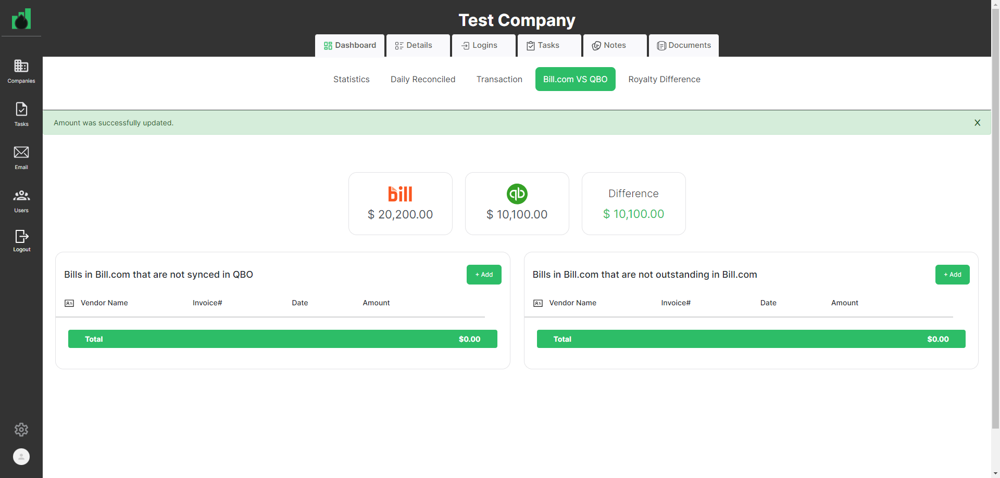

-
Companies Page Functionality
11:32:13 am / 00:19:31:675 Fail
Companies Page Functionality
02.29.2024 11:32:13 am 02.29.2024 11:51:45 am 00:19:31:675 · #test-id=1Pass40. user should be on Statistics tab in the companyGiven User has already logged in to applicationusername password admin@ontrack.com Admin@12345 And User is on Companies page url "https://beta.cisin.com:4991/"When user should be able to select company in the company pageThen user should be on Statistics tab in the company"Statistics"Pass41. Royalty & Fidesic widget should be displayedGiven User has already logged in to applicationusername password admin@ontrack.com Admin@12345 And User is on Companies page url "https://beta.cisin.com:4991/"When user should be able to select company in the company pageThen "Royalty & Fidesic" widget should be displayedPass42. Add button should be displayedGiven User has already logged in to applicationusername password admin@ontrack.com Admin@12345 And User is on Companies page url "https://beta.cisin.com:4991/"When user should be able to select company in the company pageThen Add button should be displayedPass43. Create Royalty & Fidesic record title should be displayed on PopUpGiven User has already logged in to applicationusername password admin@ontrack.com Admin@12345 And User is on Companies page url "https://beta.cisin.com:4991/"When user should be able to select company in the company pageAnd user should be clicked on add button of Royalty & Fidesic recordThen "Create Royalty & Fidesic record" title should be displayedPass44. add button should be displayed on Royalty & Fidesic PopUpGiven User has already logged in to applicationusername password admin@ontrack.com Admin@12345 And User is on Companies page url "https://beta.cisin.com:4991/"When user should be able to select company in the company pageAnd user should be clicked on add button of Royalty & Fidesic recordThen add button should be displayed on Royalty & Fidesic PopUpPass45. close button should be displayed on Royalty & Fidesic PopUpGiven User has already logged in to applicationusername password admin@ontrack.com Admin@12345 And User is on Companies page url "https://beta.cisin.com:4991/"When user should be able to select company in the company pageAnd user should be clicked on add button of Royalty & Fidesic recordThen close button should be displayed on Royalty & Fidesic PopUpPass46. Licence number error message should be displayed on Royalty & Fidesic PopUpGiven User has already logged in to applicationusername password admin@ontrack.com Admin@12345 And User is on Companies page url "https://beta.cisin.com:4991/"When user should be able to select company in the company pageAnd user should be clicked on add button of Royalty & Fidesic recordAnd user should be clicked add button on Royalty & Fidesic PopUpThen user should be able to see the licence error message"License number can't be blank.License number is not a number"Pass47. user should be able to Create Royalty & Fidesic recordGiven User has already logged in to applicationusername password admin@ontrack.com Admin@12345 And User is on Companies page url "https://beta.cisin.com:4991/"When user should be able to select company in the company pageAnd user should be clicked on add button of Royalty & Fidesic recordAnd user should be able to enter all the fields of Royalty & Fidesic recordtitle royalty filed date royalty audit date royaly paid date royalty invoice date 12345 February 20, 2024 February 20, 2024 February 20, 2024 February 20, 2024 Then Royalty & Fidesic record should be displayed on Royalty & Fidesic widgetPass48. user should be able to update Royalty & Fidesic recordGiven User has already logged in to applicationusername password admin@ontrack.com Admin@12345 And User is on Companies page url "https://beta.cisin.com:4991/"When user should be able to select company in the company pageAnd user should be clicked on edit buttonAnd user should be able to update Royalty & Fidesic recordtitle royalty filed date royalty audit date royaly paid date royalty invoice date 45689 February 21, 2024 February 21, 2024 February 21, 2024 February 21, 2024 Then user should be able to see the update Royalty & Fidesic recordPass49. user should be able to delete Royalty & Fidesic recordGiven User has already logged in to applicationusername password admin@ontrack.com Admin@12345 And User is on Companies page url "https://beta.cisin.com:4991/"When user should be able to select company in the company pageAnd user should be able to delete Royalty & Fidesic recordPass50. user should be able to close Check Off List PopUpGiven User has already logged in to applicationusername password admin@ontrack.com Admin@12345 And User is on Companies page url "https://beta.cisin.com:4991/"When user should be able to select company in the company pageAnd user should be clicked on add button of check of listAnd user should be able to close Check Off List PopUpThen user should be close check off list popup successfullyPass51. User should see an validation message for NameGiven User has already logged in to applicationusername password admin@ontrack.com Admin@12345 And User is on Companies page url "https://beta.cisin.com:4991/"When user should be able to select company in the company pageAnd user should be clicked on add button of check of listAnd user shoudl be clicked on add button of check of list popupThen User should see an validation message for Name"Name can't be blank."Pass52. User should see an validation message for DateGiven User has already logged in to applicationusername password admin@ontrack.com Admin@12345 And User is on Companies page url "https://beta.cisin.com:4991/"When user should be able to select company in the company pageAnd user should be clicked on add button of check of listAnd user shoudl be clicked on add button of check of list popupThen User should see an validation message for Date"Date can't be blank."Pass53. User should be able to create Check Off List RecordGiven User has already logged in to applicationusername password admin@ontrack.com Admin@12345 And User is on Companies page url "https://beta.cisin.com:4991/"When user should be able to select company in the company pageAnd user should be clicked on add button of check of listAnd user should be able to enter all the fields of Check Off Listname date Ravi February 20, 2024 Then user should be able to see the check off list"Ravi"Pass54. user should be able to update Check Off List recordGiven User has already logged in to applicationusername password admin@ontrack.com Admin@12345 And User is on Companies page url "https://beta.cisin.com:4991/"When user should be able to select company in the company pageAnd user should be clicked on edit button of Check Off ListAnd user should be able to update Check Off List recordname date Janvi February 21, 2024 Then user should be able to see the update Check Off Listc record"Janvi"Pass55. user should be able to delete check off list recordGiven User has already logged in to applicationusername password admin@ontrack.com Admin@12345 And User is on Companies page url "https://beta.cisin.com:4991/"When user should be able to select company in the company pageAnd user should be able to delete check off list recordPass56. user should be able to close Reconciled Date PopUpGiven User has already logged in to applicationusername password admin@ontrack.com Admin@12345 And User is on Companies page url "https://beta.cisin.com:4991/"When user should be able to select company in the company pageAnd user should be clicked on add button of Reconciled DateAnd user should be able to close Reconciled Date PopUpThen user should be close Reconciled Date popup successfullyPass57. User should see an validation message for Account NameGiven User has already logged in to applicationusername password admin@ontrack.com Admin@12345 And User is on Companies page url "https://beta.cisin.com:4991/"When user should be able to select company in the company pageAnd user should be clicked on add button of Reconciled DateAnd user shoudl be clicked on add button of Reconciled Date popupThen User should see an validation message for Account Name"Account name can't be blank."Pass58. User should be able to create Reconciled Dates recordGiven User has already logged in to applicationusername password admin@ontrack.com Admin@12345 And User is on Companies page url "https://beta.cisin.com:4991/"When user should be able to select company in the company pageAnd user should be clicked on add button of Reconciled DateAnd User should be able to create Reconciled Dates recordAccountName report date auditor date ICICI0000456123 February 20, 2024 February 20, 2024 Then user should be able to see the Reconciled Dates record"ICICI0000456123"Pass59. User should be able to Edit Reconciled Dates recordGiven User has already logged in to applicationusername password admin@ontrack.com Admin@12345 And User is on Companies page url "https://beta.cisin.com:4991/"When user should be able to select company in the company pageAnd user should be clicked on edit button of Reconciled DateAnd User should be able to edit Reconciled Dates recordAccountName report date auditor date ICICI0000356214 February 21, 2024 February 21, 2024 Then user should be able to see the update Reconciled Dates record"ICICI0000356214"Pass60. user should be able to delete Reconciled Date recordGiven User has already logged in to applicationusername password admin@ontrack.com Admin@12345 And User is on Companies page url "https://beta.cisin.com:4991/"When user should be able to select company in the company pageAnd user should be able to delete Reconciled Date recordPass61. user should be able to close New Loan Payment PopUpGiven User has already logged in to applicationusername password admin@ontrack.com Admin@12345 And User is on Companies page url "https://beta.cisin.com:4991/"When user should be able to select company in the company pageAnd user should be clicked on add button of New Loan PaymentAnd user should be able to close New Loan Payment PopUpThen user should be close New Loan Payment popup successfullyPass62. User should see an validation message for Loan NameGiven User has already logged in to applicationusername password admin@ontrack.com Admin@12345 And User is on Companies page url "https://beta.cisin.com:4991/"When user should be able to select company in the company pageAnd user should be clicked on add button of New Loan PaymentAnd user should be clicked on add button of New Loan Payment popupThen User should see an validation message for Loan Name"Loan name can't be blank."Pass63. User should see an validation message for Payment DateGiven User has already logged in to applicationusername password admin@ontrack.com Admin@12345 And User is on Companies page url "https://beta.cisin.com:4991/"When user should be able to select company in the company pageAnd user should be clicked on add button of New Loan PaymentAnd user should be clicked on add button of New Loan Payment popupThen User should see an validation message for Payment Date"Payment date can't be blank."Pass64. User should see an validation message for AmountGiven User has already logged in to applicationusername password admin@ontrack.com Admin@12345 And User is on Companies page url "https://beta.cisin.com:4991/"When user should be able to select company in the company pageAnd user should be clicked on add button of New Loan PaymentAnd user should be clicked on add button of New Loan Payment popupThen User should see an validation message for Amount"Amount can't be blank."Pass65. User should be able to create loan payment RecordGiven User has already logged in to applicationusername password admin@ontrack.com Admin@12345 And User is on Companies page url "https://beta.cisin.com:4991/"When user should be able to select company in the company pageAnd user should be clicked on add button of New Loan PaymentAnd user should be able to enter all the fields of new loan paymentloan name payment date loan amount Ravi February 20, 2024 10000 Then user should be able to see the loan paymentPass66. User should be able to edit loan payment RecordGiven User has already logged in to applicationusername password admin@ontrack.com Admin@12345 And User is on Companies page url "https://beta.cisin.com:4991/"When user should be able to select company in the company pageAnd user should be clicked on edit button of New Loan PaymentAnd user should be able to edit all the fields of new loan paymentloan name payment date loan amount Janvi February 21, 2024 20000 Then user should be able to see the edit loan paymentPass67. user should be able to delete Loan Payment recordGiven User has already logged in to applicationusername password admin@ontrack.com Admin@12345 And User is on Companies page url "https://beta.cisin.com:4991/"When user should be able to select company in the company pageAnd user should be able to delete Loan payment recordPass68. user should be able to redirect to Daily Reconciled page of compnay dashboardGiven User has already logged in to applicationusername password admin@ontrack.com Admin@12345 And User is on Companies page url "https://beta.cisin.com:4991/"When user should be able to select company in the company pageAnd user should be clicked on Daily Reconciled TabThen user should be on daily reconciled page of company page"Daily Reconciled"Pass69. user should be see the error message on Add Account PopUpGiven User has already logged in to applicationusername password admin@ontrack.com Admin@12345 And User is on Companies page url "https://beta.cisin.com:4991/"When user should be able to select company in the company pageAnd user should be clicked on Daily Reconciled TabAnd user should be clicked on add account button in the Daily Reconciled TabAnd user should be able to click add button on Add Account PopUpThen "Name can't be blank." Error message should be displayedPass70. User should be able to add account name at Daily Reconciled pageGiven User has already logged in to applicationusername password admin@ontrack.com Admin@12345 And User is on Companies page url "https://beta.cisin.com:4991/"When user should be able to select company in the company pageAnd user should be clicked on Daily Reconciled TabAnd user should be clicked on add account button in the Daily Reconciled TabAnd user should be able to add account name"Automate DR"Then user should be able to see add Account name in the daily reconciled pagePass72. User should be able to edit account name at Daily Reconciled pageGiven User has already logged in to applicationusername password admin@ontrack.com Admin@12345 And User is on Companies page url "https://beta.cisin.com:4991/"When user should be able to select company in the company pageAnd user should be clicked on Daily Reconciled TabAnd user should be click on edit button on Daily Reconciled pageAnd user should be able to update account nameUpdate Account Name Auto DR And user should be able to click add button on Add Account PopUpThen user should be able to see Update Account name in the daily reconciled pageWhen user should be change the account in the daily reconciled Page"Automate DR"Pass73. user should be able to add New Payment in the account at daily reconciled pageGiven User has already logged in to applicationusername password admin@ontrack.com Admin@12345 And User is on Companies page url "https://beta.cisin.com:4991/"When user should be able to select company in the company pageAnd user should be clicked on Daily Reconciled TabAnd user should be able to click on add button in the account at daily reconciled pageAnd user should be able to enter the field for new payment at add new payment popuppayee date amount P01 February 20, 2024 1000 Then user should be able to see the Transaction at the account in the daily reconciled page"P01 (02/20/2024)"Pass74. User should be able to see the count of Unclreared Transactions in statistics pageGiven User has already logged in to applicationusername password admin@ontrack.com Admin@12345 And User is on Companies page url "https://beta.cisin.com:4991/"When user should be able to select company in the company pageThen user should be able to see the count of Unclreared Transactionsin statistics page"1"Pass75. user should be able to close New Payment popup in the account at daily reconciled pageGiven User has already logged in to applicationusername password admin@ontrack.com Admin@12345 And User is on Companies page url "https://beta.cisin.com:4991/"When user should be able to select company in the company pageAnd user should be clicked on Daily Reconciled TabAnd user should be able to click on add button in the account at daily reconciled pageThen user should be able to close New Payment popup in the account at daily reconciled pagePass76. user should be able to update New Payment in the account at daily reconciled pageGiven User has already logged in to applicationusername password admin@ontrack.com Admin@12345 And User is on Companies page url "https://beta.cisin.com:4991/"When user should be able to select company in the company pageAnd user should be clicked on Daily Reconciled TabAnd user should be able to click on edit button in the account at daily reconciled pageAnd user should be able to update the field for new payment at add new payment popuppayee date amount P001 February 21, 2024 1000 Then user should be able to see the update Transaction at the account in the daily reconciled page"P001 (02/21/2024)"Pass77. user should be able to delete the payment in the account at daily reconciled pageGiven User has already logged in to applicationusername password admin@ontrack.com Admin@12345 And User is on Companies page url "https://beta.cisin.com:4991/"When user should be able to select company in the company pageAnd user should be clicked on Daily Reconciled TabAnd user should be able to delete the payment in the account at daily reconciled pagePass78. User should be able to see the count of Unclreared Transactions in statistics pageGiven User has already logged in to applicationusername password admin@ontrack.com Admin@12345 And User is on Companies page url "https://beta.cisin.com:4991/"When user should be able to select company in the company pageThen user should be able to see the count of Unclreared Transactions after delete in statistics page"0"Pass79. user should be able to delete the account in the daily reconciled pageGiven User has already logged in to applicationusername password admin@ontrack.com Admin@12345 And User is on Companies page url "https://beta.cisin.com:4991/"When user should be able to select company in the company pageAnd user should be clicked on Daily Reconciled TabAnd user should be able to delete the account in the daily reconciled pagePass80. user should be able to redirect to Transaction page of compnay dashboardGiven User has already logged in to applicationusername password admin@ontrack.com Admin@12345 And User is on Companies page url "https://beta.cisin.com:4991/"When user should be able to select company in the company pageAnd user should be clicked on Transaction TabThen user should be on transaction page of company page"Transaction"Pass81. user should be able to close the Add Transaction of Payment Deposited but not ReceivedGiven User has already logged in to applicationusername password admin@ontrack.com Admin@12345 And User is on Companies page url "https://beta.cisin.com:4991/"When user should be able to select company in the company pageAnd user should be clicked on Transaction TabAnd user should be able to click on add button in the Payment Deposited but not Received widgetThen user should be able to close the Add Transaction of Payment Deposited but not Received successfullyPass82. User should see an validation message for vendor NameGiven User has already logged in to applicationusername password admin@ontrack.com Admin@12345 And User is on Companies page url "https://beta.cisin.com:4991/"When user should be able to select company in the company pageAnd user should be clicked on Transaction TabAnd user should be able to click on add button in the Payment Deposited but not Received widgetAnd user should be clicked on add button in add transaction popup of Payment Deposited but not Received widgetThen User should see an validation message for vendor Name"Customer name can't be blank."Pass83. User should see an validation message for dateGiven User has already logged in to applicationusername password admin@ontrack.com Admin@12345 And User is on Companies page url "https://beta.cisin.com:4991/"When user should be able to select company in the company pageAnd user should be clicked on Transaction TabAnd user should be able to click on add button in the Payment Deposited but not Received widgetAnd user should be clicked on add button in add transaction popup of Payment Deposited but not Received widgetThen User should see an validation message for date"Date can't be blank."Pass84. User should see an validation message for amountGiven User has already logged in to applicationusername password admin@ontrack.com Admin@12345 And User is on Companies page url "https://beta.cisin.com:4991/"When user should be able to select company in the company pageAnd user should be clicked on Transaction TabAnd user should be able to click on add button in the Payment Deposited but not Received widgetAnd user should be clicked on add button in add transaction popup of Payment Deposited but not Received widgetThen User should see an validation message for amount"Amount can't be blank."Pass85. User should be able to create Payment Deposited but not Received RecordGiven User has already logged in to applicationusername password admin@ontrack.com Admin@12345 And User is on Companies page url "https://beta.cisin.com:4991/"When user should be able to select company in the company pageAnd user should be clicked on Transaction TabAnd user should be able to click on add button in the Payment Deposited but not Received widgetAnd user should be able to enter all the fields in add transaction popup of Payment Deposited but not Received widgetvendor name Bank Account date Amount Ravi ICICI10000 February 20, 2024 10000 Then user should be able to see record of the Payment Deposited but not Received widget"Ravi(ICICI10000)"Pass86. User should be able to see the count of Payment Not Received in statistics pageGiven User has already logged in to applicationusername password admin@ontrack.com Admin@12345 And User is on Companies page url "https://beta.cisin.com:4991/"When user should be able to select company in the company pageThen user should be able to see the count of Payment Not Received in statistics page"1"Pass87. User should be able to edit Payment Deposited but not Received RecordGiven User has already logged in to applicationusername password admin@ontrack.com Admin@12345 And User is on Companies page url "https://beta.cisin.com:4991/"When user should be able to select company in the company pageAnd user should be clicked on Transaction TabAnd user should be able to click on edit button in the Payment Deposited but not Received widgetAnd user should be able to update all the fields in add transaction popup of Payment Deposited but not Received widgetvendor name Bank Account date Amount Janvi ICICI3000 January 21, 2024 20000 Then user should be able to see updated record of the Payment Deposited but not Received widget"Janvi(ICICI3000)"Pass88. user should be able to delete Payment Deposited recordGiven User has already logged in to applicationusername password admin@ontrack.com Admin@12345 And User is on Companies page url "https://beta.cisin.com:4991/"When user should be able to select company in the company pageAnd user should be clicked on Transaction TabAnd user should be able to delete Payment Deposited recordPass89. User should be able to see the count of Payment Not Received in statistics pageGiven User has already logged in to applicationusername password admin@ontrack.com Admin@12345 And User is on Companies page url "https://beta.cisin.com:4991/"When user should be able to select company in the company pageThen user should be able to see the count of Payment Not Received in statistics page"0"Pass90. user should be able to close the Add Transaction of Payment Received but not DepositedGiven User has already logged in to applicationusername password admin@ontrack.com Admin@12345 And User is on Companies page url "https://beta.cisin.com:4991/"When user should be able to select company in the company pageAnd user should be clicked on Transaction TabAnd user should be able to click on add button in the Payment Received but not Deposited widgetThen user should be able to close the Add Transaction of Payment Received but not Deposited successfullyPass91. User should see an validation message for vendor Name of Payment Received but not Deposited widgetGiven User has already logged in to applicationusername password admin@ontrack.com Admin@12345 And User is on Companies page url "https://beta.cisin.com:4991/"When user should be able to select company in the company pageAnd user should be clicked on Transaction TabAnd user should be able to click on add button in the Payment Received but not Deposited widgetAnd user should be clicked on add button in add transaction popup of Payment Received but not Deposited widgetThen User should see an validation message for vendor Name of Payment Received but not Deposited widget"Customer name can't be blank."Pass92. User should see an validation message for date of Payment Received but not Deposited widgetGiven User has already logged in to applicationusername password admin@ontrack.com Admin@12345 And User is on Companies page url "https://beta.cisin.com:4991/"When user should be able to select company in the company pageAnd user should be clicked on Transaction TabAnd user should be able to click on add button in the Payment Received but not Deposited widgetAnd user should be clicked on add button in add transaction popup of Payment Received but not Deposited widgetThen User should see an validation message for date of Payment Received but not Deposited widget"Date can't be blank."Pass93. User should see an validation message for amountGiven User has already logged in to applicationusername password admin@ontrack.com Admin@12345 And User is on Companies page url "https://beta.cisin.com:4991/"When user should be able to select company in the company pageAnd user should be clicked on Transaction TabAnd user should be able to click on add button in the Payment Received but not Deposited widgetAnd user should be clicked on add button in add transaction popup of Payment Received but not Deposited widgetThen User should see an validation message for amount of Payment Received but not Deposited widgetPass94. User should be able to create Payment Received but not Deposited widgetGiven User has already logged in to applicationusername password admin@ontrack.com Admin@12345 And User is on Companies page url "https://beta.cisin.com:4991/"When user should be able to select company in the company pageAnd user should be clicked on Transaction TabAnd user should be able to click on add button in the Payment Received but not Deposited widgetAnd user should be able to enter all the fields in add transaction popup of Payment Received but not Deposited widgetvendor name Bank Account date Amount Ravi ICICI10000 February 20, 2024 10000 Then user should be able to see record of the Payment Received but not Deposited widget"Ravi(ICICI10000)"Pass95. User should be able to see the count of Payment Not yet deposited in statistics pageGiven User has already logged in to applicationusername password admin@ontrack.com Admin@12345 And User is on Companies page url "https://beta.cisin.com:4991/"When user should be able to select company in the company pageThen user should be able to see the count of Payment Not yet deposited in statistics page"1"Pass96. User should be able to edit Payment Received but not Deposited widgetGiven User has already logged in to applicationusername password admin@ontrack.com Admin@12345 And User is on Companies page url "https://beta.cisin.com:4991/"When user should be able to select company in the company pageAnd user should be clicked on Transaction TabAnd user should be able to click on edit button in the Payment Received but not Deposited widgetAnd user should be able to update all the fields in add transaction popup of Payment Received but not Deposited widgetvendor name Bank Account date Amount Janvi ICICI3000 February 21, 2024 20000 Then user should be able to see updated record of the Payment Received but not Deposited widget"Janvi(ICICI3000)"Pass97. user should be able to delete Payment Received recordGiven User has already logged in to applicationusername password admin@ontrack.com Admin@12345 And User is on Companies page url "https://beta.cisin.com:4991/"When user should be able to select company in the company pageAnd user should be clicked on Transaction TabAnd user should be able to delete Payment Received recordPass98. User should be able to see the count of Payment Not yet deposited in statistics pageGiven User has already logged in to applicationusername password admin@ontrack.com Admin@12345 And User is on Companies page url "https://beta.cisin.com:4991/"When user should be able to select company in the company pageThen user should be able to see the count of Payment Not yet deposited after delete transaction in statistics page"0"Pass99. user should be able to close the Add Transaction of Unknown TransactionsGiven User has already logged in to applicationusername password admin@ontrack.com Admin@12345 And User is on Companies page url "https://beta.cisin.com:4991/"When user should be able to select company in the company pageAnd user should be clicked on Transaction TabAnd user should be able to click on add button in the Unknown Transactions widgetThen user should be able to close the Add Transaction of Unknown Transactions successfullyPass100. User should see an validation message for vendor Name of Unknown Transactions widgetGiven User has already logged in to applicationusername password admin@ontrack.com Admin@12345 And User is on Companies page url "https://beta.cisin.com:4991/"When user should be able to select company in the company pageAnd user should be clicked on Transaction TabAnd user should be able to click on add button in the Unknown Transactions widgetAnd user should be clicked on add button in add transaction popup of Unknown Transactions widgetThen User should see an validation message for vendor Name of Unknown Transactions widget"Customer name can't be blank."Pass101. User should see an validation message for date of Unknown Transactions widgetGiven User has already logged in to applicationusername password admin@ontrack.com Admin@12345 And User is on Companies page url "https://beta.cisin.com:4991/"When user should be able to select company in the company pageAnd user should be clicked on Transaction TabAnd user should be able to click on add button in the Unknown Transactions widgetAnd user should be clicked on add button in add transaction popup of Unknown Transactions widgetThen User should see an validation message for date of Unknown Transactions widget"Date can't be blank."Pass102. User should see an validation message for amountGiven User has already logged in to applicationusername password admin@ontrack.com Admin@12345 And User is on Companies page url "https://beta.cisin.com:4991/"When user should be able to select company in the company pageAnd user should be clicked on Transaction TabAnd user should be able to click on add button in the Unknown Transactions widgetAnd user should be clicked on add button in add transaction popup of Unknown Transactions widgetThen User should see an validation message for amount of Unknown Transactions widgetPass103. User should be able to create Unknown Transactions widgetGiven User has already logged in to applicationusername password admin@ontrack.com Admin@12345 And User is on Companies page url "https://beta.cisin.com:4991/"When user should be able to select company in the company pageAnd user should be clicked on Transaction TabAnd user should be able to click on add button in the Unknown Transactions widgetAnd user should be able to enter all the fields in add transaction popup of Unknown Transactions widgetvendor name Bank Account date Amount Ravi ICICI10000 February 20, 2024 10000 Then user should be able to see record of the Unknown Transactions widget"Ravi(ICICI10000)"Pass104. User should be able to see the count of unkown transactions in statistics pageGiven User has already logged in to applicationusername password admin@ontrack.com Admin@12345 And User is on Companies page url "https://beta.cisin.com:4991/"When user should be able to select company in the company pageThen user should be able to see the count of unkown transactions in statistics page"1"Pass105. User should be able to edit Unknown Transactions widgetGiven User has already logged in to applicationusername password admin@ontrack.com Admin@12345 And User is on Companies page url "https://beta.cisin.com:4991/"When user should be able to select company in the company pageAnd user should be clicked on Transaction TabAnd user should be able to click on edit button in the Unknown Transactions widgetAnd user should be able to update all the fields in add transaction popup of Unknown Transactions widgetvendor name Bank Account date Amount Janvi ICICI3000 February 21, 2024 20000 Then user should be able to see updated record of the Unknown Transactions widget"Janvi(ICICI3000)"Pass106. user should be able to delete Unknown Transactions widget recordGiven User has already logged in to applicationusername password admin@ontrack.com Admin@12345 And User is on Companies page url "https://beta.cisin.com:4991/"When user should be able to select company in the company pageAnd user should be clicked on Transaction TabAnd user should be able to delete Unknown Transactions widget recordPass107. User should be able to see the count of unkown transactions in statistics pageGiven User has already logged in to applicationusername password admin@ontrack.com Admin@12345 And User is on Companies page url "https://beta.cisin.com:4991/"When user should be able to select company in the company pageThen user should be able to see the count of unkown transactions after delete transaction in statistics page"0"Pass108. user should be able to redirect to Bills.com page of compnay dashboardGiven User has already logged in to applicationusername password admin@ontrack.com Admin@12345 And User is on Companies page url "https://beta.cisin.com:4991/"When user should be able to select company in the company pageAnd user should be clicked on Bills.com TabThen user should be on bills.com page of company page"Bill.com VS QBO"Pass109. User should see an validation message for vendor NameGiven User has already logged in to applicationusername password admin@ontrack.com Admin@12345 And User is on Companies page url "https://beta.cisin.com:4991/"When user should be able to select company in the company pageAnd user should be clicked on Bills.com TabAnd user should be able to click on add button in the Bills in Bills.com that are not sync in QBO widgetThen User should see an validation message for vendor Namein the add transactionPopup"Vendor name can't be blank."Pass110. User should see an validation message for vendor NameGiven User has already logged in to applicationusername password admin@ontrack.com Admin@12345 And User is on Companies page url "https://beta.cisin.com:4991/"When user should be able to select company in the company pageAnd user should be clicked on Bills.com TabAnd user should be able to click on add button in the Bills in Bills.com that are not sync in QBO widgetThen User should see an validation message for date in the add transactionPopup"Date can't be blank."Pass111. User should be able to create transaction in the Bills in Bills.com that are not sync in QBO widgetGiven User has already logged in to applicationusername password admin@ontrack.com Admin@12345 And User is on Companies page url "https://beta.cisin.com:4991/"When user should be able to select company in the company pageAnd user should be clicked on Bills.com TabAnd user should be able to click on add button in the Bills in Bills.com that are not sync in QBO widgetAnd user should be able to enter all the fields in add transaction popup ofBills in Bills.com that are not sync in QBO widget widgetvendor name Bank Account date Amount Ravi ICICI10000 February 20, 2024 10000 Then user should be able to see record of the Bills in Bills.com that are not sync in QBO widget"Ravi"Pass112. user should be able to delete Bills in Bills.com that are not sync in QBO widget widget recordGiven User has already logged in to applicationusername password admin@ontrack.com Admin@12345 And User is on Companies page url "https://beta.cisin.com:4991/"When user should be able to select company in the company pageAnd user should be clicked on Bills.com TabAnd user should be able to delete Bills in Bills.com that are not sync in QBO widget recordPass113. User should see an validation message for vendor NameGiven User has already logged in to applicationusername password admin@ontrack.com Admin@12345 And User is on Companies page url "https://beta.cisin.com:4991/"When user should be able to select company in the company pageAnd user should be clicked on Bills.com TabAnd user should be able to click on add button in the Bills in Bills.com that are not outstanding in Bills.com widgetThen User should see an validation message for vendor Name in the add transactionPopup Bills in Bills.com that are not outstanding in Bills.com"Vendor name can't be blank."Pass114. User should see an validation message for vendor NameGiven User has already logged in to applicationusername password admin@ontrack.com Admin@12345 And User is on Companies page url "https://beta.cisin.com:4991/"When user should be able to select company in the company pageAnd user should be clicked on Bills.com TabAnd user should be able to click on add button in the Bills in Bills.com that are not outstanding in Bills.com widgetThen User should see an validation message for date in the add transactionPopup Bills in Bills.com that are not outstanding in Bills.com"Date can't be blank."Pass115. User should be able to create transaction in the Bills in Bills.com that are not outstanding in Bills.com widgetGiven User has already logged in to applicationusername password admin@ontrack.com Admin@12345 And User is on Companies page url "https://beta.cisin.com:4991/"When user should be able to select company in the company pageAnd user should be clicked on Bills.com TabAnd user should be able to click on add button in the Bills in Bills.com that are not outstanding in Bills.com widgetAnd user should be able to enter all the fields in add transaction popup of Bills.com that are not outstanding in Bills.com widgetvendor name Bank Account date Amount Ravi ICICI10000 February 20, 2024 10000 Then user should be able to see record of Bills.com that are not outstanding in Bills.com widget"Ravi"Pass116. user should be able to delete Bills.com that are not outstanding in Bills.com widget recordGiven User has already logged in to applicationusername password admin@ontrack.com Admin@12345 And User is on Companies page url "https://beta.cisin.com:4991/"When user should be able to select company in the company pageAnd user should be clicked on Bills.com TabAnd user should be able to delete Bills.com that are not outstanding in Bills.com widget recordFail117. user should be calculate difference between bills.com and QBOGiven User has already logged in to applicationusername password admin@ontrack.com Admin@12345 And User is on Companies page url "https://beta.cisin.com:4991/"When user should be able to select company in the company pageAnd user should be clicked on Bills.com TabAnd user should be enter the amount in bills.com calculate widget"200"And user should be enter the amount in QBO calculate widget."100"Then user should be able to see the difference between bills.com and QBO"$ 100.00"AppHooks.ApplicationHooks.tearDown(io.cucumber.java.Scenario)117._user_should_be_calculate_difference_between_bills.com_and_QBOPass118. user should be able to redirect to Royalty Difference page of compnay dashboardGiven User has already logged in to applicationusername password admin@ontrack.com Admin@12345 And User is on Companies page url "https://beta.cisin.com:4991/"When user should be able to select company in the company pageAnd user should be clicked on Royalty Difference Tab in the company dashboard tabThen user should be on royalty difference page of company page"Royalty Difference"Pass119. user should be able to see add franchise popup in Royalty Difference pageGiven User has already logged in to applicationusername password admin@ontrack.com Admin@12345 And User is on Companies page url "https://beta.cisin.com:4991/"When user should be able to select company in the company pageAnd user should be clicked on Royalty Difference Tab in the company dashboard tabAnd user should be clicked on edit franchise button in Royalty Difference pageThen user should be able to see add franchise popup in Royalty Difference pagePass200. Error message should be displayed for franchise name in Royalty Difference PopUpGiven User has already logged in to applicationusername password admin@ontrack.com Admin@12345 And User is on Companies page url "https://beta.cisin.com:4991/"When user should be able to select company in the company pageAnd user should be clicked on Royalty Difference Tab in the company dashboard tabAnd user should be clicked on edit franchise button in Royalty Difference pageAnd User should be click on add button on Royalty and Difference PopUpThen "Franchise number can't be blank." message should be displayed for franchise name in Royalty Difference PopUpPass201. user should be able to clicked on close button in Royalty Difference PopUpGiven User has already logged in to applicationusername password admin@ontrack.com Admin@12345 And User is on Companies page url "https://beta.cisin.com:4991/"When user should be able to select company in the company pageAnd user should be clicked on Royalty Difference Tab in the company dashboard tabAnd user should be clicked on edit franchise button in Royalty Difference pageAnd user should be able to clicked on close button in Royalty Difference PopUpThen Royalty Difference PopUp closed successfully"Test Company"Pass202. user should be able to Add franchise in Royalty DifferenceGiven User has already logged in to applicationusername password admin@ontrack.com Admin@12345 And User is on Companies page url "https://beta.cisin.com:4991/"When user should be able to select company in the company pageAnd user should be clicked on Royalty Difference Tab in the company dashboard tabAnd User should be enter the fields for franchise in the Royalty Difference pagefranchisenumber servpronet QBO 2586 56985 10000 Then user should be able to see the franchise in the Royalty Difference pagePass203. user should be able to edit franchise in Royalty DifferenceGiven User has already logged in to applicationusername password admin@ontrack.com Admin@12345 And User is on Companies page url "https://beta.cisin.com:4991/"When user should be able to select company in the company pageAnd user should be clicked on Royalty Difference Tab in the company dashboard tabAnd User should be enter the fields for update franchise in the Royalty Difference pagefranchisenumber servpronet QBO 1234 58965 20000 Then user should be able to see the updated franchise in the Royalty Difference pagePass204. user should be able to search franchise according to year from year dropdownGiven User has already logged in to applicationusername password admin@ontrack.com Admin@12345 And User is on Companies page url "https://beta.cisin.com:4991/"When user should be able to select company in the company pageAnd user should be clicked on Royalty Difference Tab in the company dashboard tabAnd user should be select year from year dropdown in the dashboard Royalty Difference page of the companyThen user should be able to see the franchise according to yearPass205. validate user should be able to delete franchise in royalty difference tabGiven User has already logged in to applicationusername password admin@ontrack.com Admin@12345 And User is on Companies page url "https://beta.cisin.com:4991/"When user should be able to select company in the company pageAnd user should be clicked on Royalty Difference Tab in the company dashboard tabAnd user should be able to click on expand button of the monthAnd user should be able to delete the franchiseThen user should be able to see the validation message after deleting the franchise"Franchise was deleted successfully."
-
org.openqa.selenium.NoSuchElementException
1 tests
org.openqa.selenium.NoSuchElementException
1 failedStatus Timestamp TestName Fail 11:49:39 am Then user should be able to see the difference between bills.com and QBO"$ 100.00" Companies Page Functionality.117. user should be calculate difference between bills.com and QBO.Then user should be able to see the difference between bills.com and QBO"$ 100.00"
Started
Feb 29, 2024 11:32:11 am
Ended
Feb 29, 2024 11:51:45 am
Features Passed
0
Features Failed
1
Features
Scenarios
Steps
Timeline